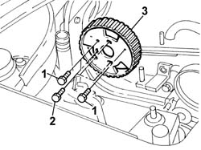

1060A35 injection pump toothed drive pulley - r+r with timing belt removed
- Path
- Procedures > 10 ENGINE > 1060 DIESEL FUEL INJECTION > 1060A diesel injection pump and control > 1060A35 injection pump toothed drive pulley - r+r with timing belt removed
- Kind
- repair procedure (removal / refitting; the operation number is the code)
- Applies to
- all engines; all production periods
- Interactive page
- https://sloeber94.github.io/elrnDB-fDbl/en/#/2584458
Applies to: all engines; all production periods
 Removing
Removing
 Refitting
Refitting1. Fit the two bolts for stopping the rotation of the injection pump pulley into the holes made on the pulley.
2. Unscrew the pulley securing bolts.
Remove the bolts fitted previously for locking the pulley.
3. Remove the injection pump pulley.

Applies to: all engines; all production periods
Refitting
RemovingFit the injection pump pulley.
Screw in the pulley bolts without tightening.